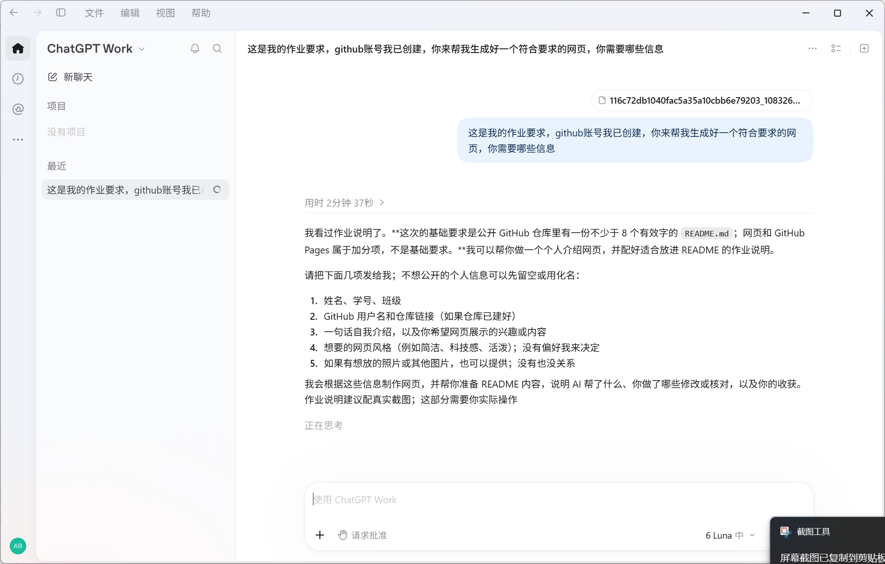

整理任务与思路
WorkBuddy 帮我理解作业要求、梳理需要呈现的内容。我再结合课程说明确定页面重点，避免内容只剩下视觉装饰。
我正在学习如何把想法变成清楚、可运行、能分享的作品。从使用 AI 梳理课程作业，到尝试编写网页对战脚本，我希望把任务目标、实现过程和自己的判断都记录下来。
这是我的课程作业仓库。个人信息先以占位符显示，提交前我会替换成自己的信息。
把 AI 当作协作工具，也保留自己的判断和核对。
WorkBuddy 帮我理解作业要求、梳理需要呈现的内容。我再结合课程说明确定页面重点，避免内容只剩下视觉装饰。
ChatGPT 协助我规划页面结构和 README 初稿。我提供作业背景、仓库地址与个人经历，并核对生成内容是否贴合任务。
DSH 协助编写 Pokémon Showdown 对战辅助脚本。我关注脚本要处理的数据、行动判断过程，以及结果是否符合预期。
我提供项目目标，并使用 DSH 辅助编写 Pokémon Showdown 对战辅助脚本。它的思路是先把队伍文本转换为程序可处理的数据，再结合对战状态分析可选行动。代码会考虑属性克制、招式威力、速度、天气和场地等因素，尝试评估攻击、首发和换人选择。
脚本还读取外部的游戏资料；如果使用率数据不可用，代码会尝试使用简化的预测方式。这个过程让我看到，复杂任务可以拆成数据读取、状态记录、规则计算和行动选择等环节。提交时我会再根据自己的实际运行和修改经历补充核对记录。
打开 GitHub 仓库 ↗const signals = [ "读取队伍配置", "分析对战局面", "比较可选行动", "记录并复核结果" ]; // 先理解问题，再让 AI 协助实现
我以为完成作业只要把页面做出来。整理要求后，后来发现还要在 README 里交代 AI 帮了什么、我自己做了哪些核对，以及下一步的收获。WorkBuddy 和 ChatGPT 帮我梳理内容与页面结构；我负责提供真实经历、核对作业要求，并替换个人信息占位符。
脚本项目也让我认识到，生成代码只是开始。队伍资料、对战状态和规则计算之间需要配合；一个判断结果是否可靠，仍要回到具体输入和运行情况中检查。
这次学到的是：AI 可以加快起步，但项目描述和验证记录要对应真实过程。下一次我会边做边记下遇到的问题、修改原因和运行结果，也会先完成最核心的功能，再逐步增加细节。
